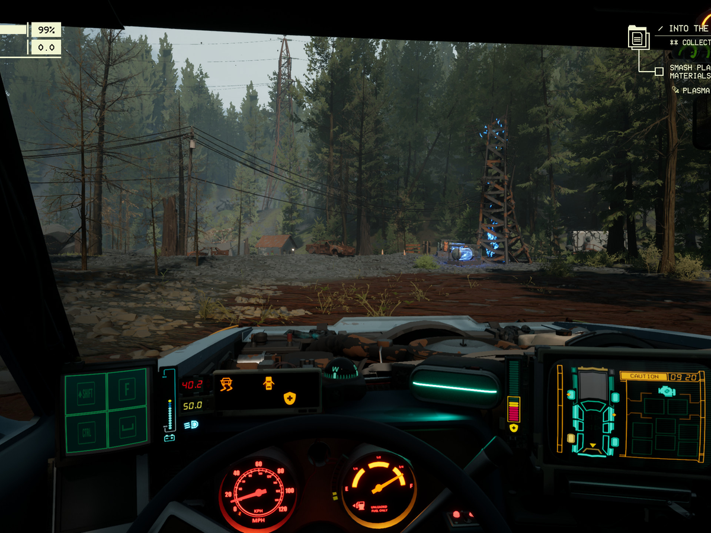
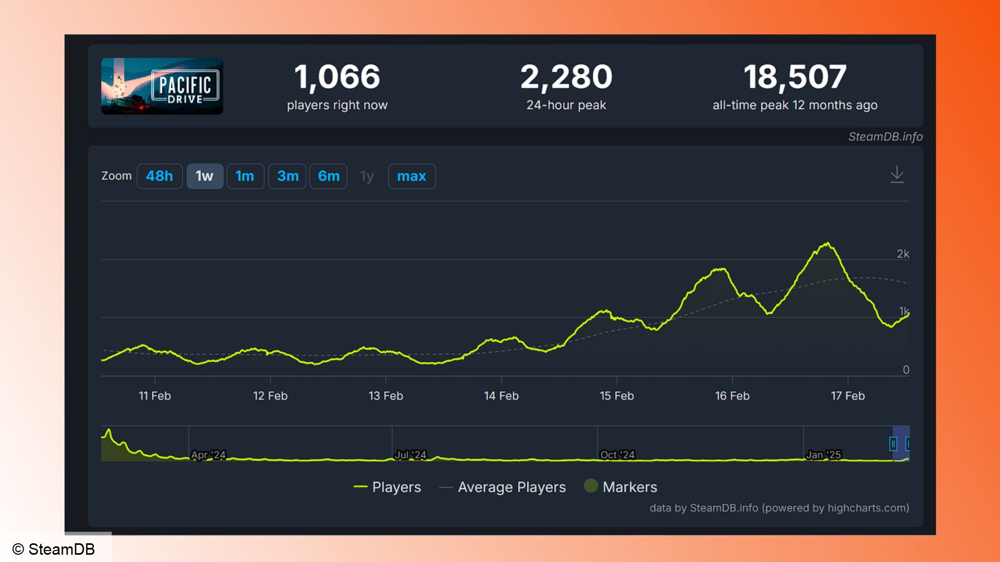

Bom tấn sinh tồn quá chất lượng bất ngờ giảm giá mạnh, thấp nhất trên Steam cho game thủ
Đây là lúc thích hợp nhất để các game thủ hoàn toàn có thể trải nghiệm trò chơi này.
Có một thực tế rằng sau một khoảng thời gian ra mắt, phần lớn các tựa game trên Steam đều sẽ chứng kiến những đợt giảm giá mạnh.
Dù cho là các bom tấn, siêu phẩm có mức giá tiền triệu cho tới những trò chơi vô cùng chất lượng, trước sau gì cũng đều có thể được mua với giá rẻ hơn bản gốc. Và giờ là lúc không thể thích hợp hơn để người chơi có cơ hội trải nghiệm Pacific Drive - một tựa game cũng chỉ vừa ra mắt vào năm 2024.

2024 là năm của những tựa game sinh tồn, thế nên không lạ khi Pacific Drive đã trở nên "lọt thỏm" trong hàng loạt những bom tấn khác như Palworld, Once Human, The Forever Winter.
Thế nhưng chất lượng của trò chơi này là điều gần như không phải bàn cãi. Quan trọng hơn, đây là thời điểm rất thích hợp để các game thủ có thể sở hữu Pacific Drive, khi mà mức giá của nó đang được sale off tới 40% trên Steam. Cụ thể, giờ đây chỉ cần bỏ ra trên 200.000 VND, người chơi đã có thể sở hữu ngay bom tấn này với mức giá thấp nhất từ trước tới nay trên Steam.
Pacific Drive không phải là trò chơi sinh tồn thông thường. Các game thủ sẽ mắc kẹt trong một khu vực bí ẩn, bị bỏ hoang của Washington tràn ngập những điều bất thường không thể lý giải về mặt khoa học. Chỉ với một chiếc xe ga sắp sụp đổ, người chơi sẽ cần thu thập, nâng cấp xe cũng như khám phá những bí ẩn xung quanh thế giới này. Các bài đánh giá dành cho Pacific Drive đa phần là tích cực, luôn tạo ra cảm giác mới mẻ cho mỗi lần chơi của các game thủ. Quan trọng hơn, kể từ thời điểm ra mắt, Pacific Drive đã có thêm khá nhiều bản cập nhật nội dung miễn phí
Đợt giảm giá của Pacific Drive cũng đồng thời thu hút thêm rất đông các game thủ tham gia trò chơi này. Kể từ khi xuống giá, trò chơi đã thu hút khoảng 2.000 người chơi cùng một thời điểm, và con số có thể tiếp tục tăng cao nữa trong thời gian tới.